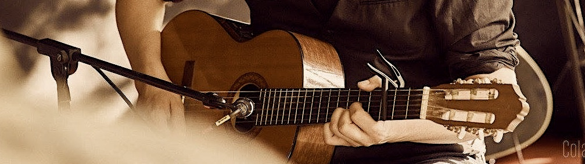

Samsam Fait des Chansons
On peut retrouver ici mon tout premier BandCamp, où je déposais alors mes chansons dès 2009.
L'Album "Il serait temps de rentrer" est un recueil de textes parlés sur de la musique et de reprises, sortis en janvier 2010.
"Samsam Fait des Chansons" regroupe plutôt des chansons en vrac sans démarche unique, postées à plusieurs années d'intervalles, dont certaines se retrouveront plus tard dans d'autres projets, comme RST ou Albaricate.